(Integration of 'Git' and 'Docker' with 'Jenkins')
JOB 01 | If Developer push to dev branch then Jenkins will fetch from dev and deploy on dev-docker environment
01. First creating workspace to create dir and initialize with git
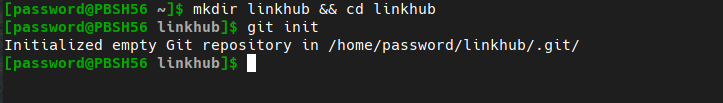
02. create a index.html for project by : nano index.html
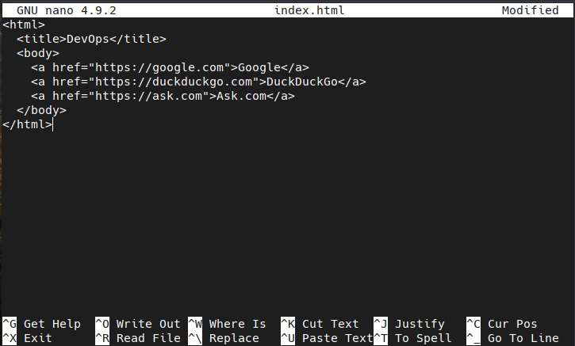
03. create a dev branch
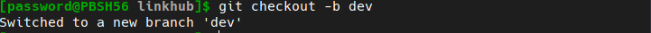
04. create a file 'post-commit' in .git/hooks dir for auto push in git
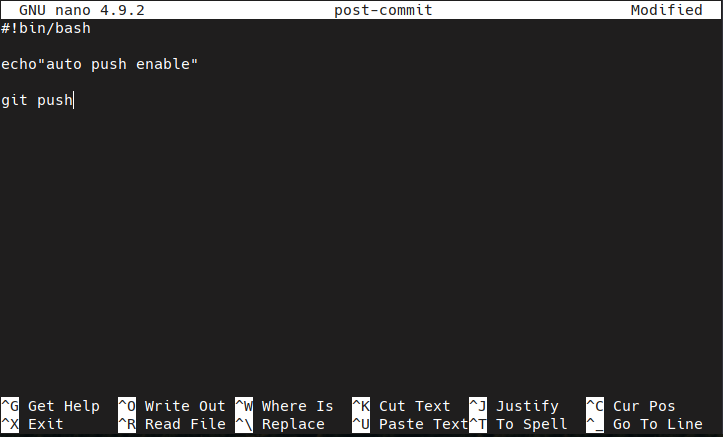
05. create a repo on github.com
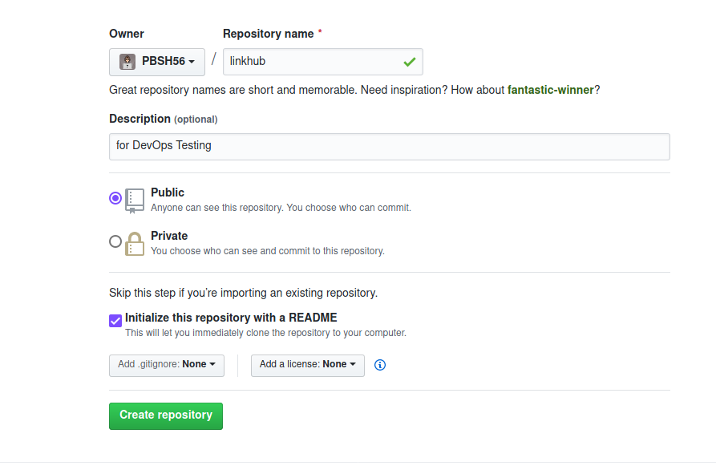
06. create a item in Jenkins and setup for git
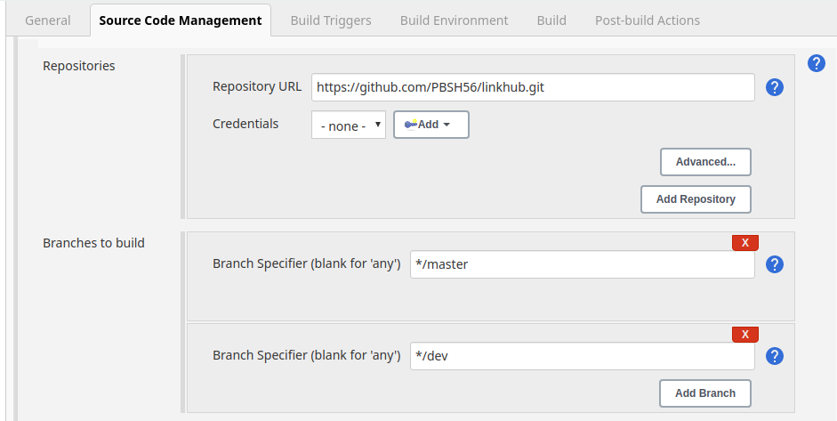
07. To fetch the repo from github use Poll SCM and frequency 1min
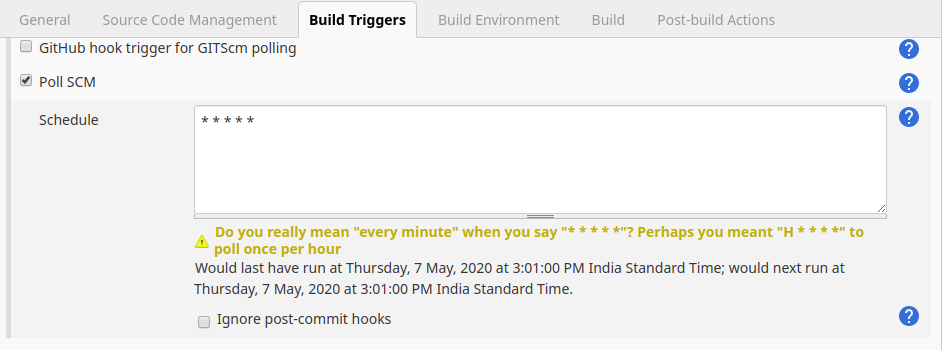
08. To Deploy on Docker
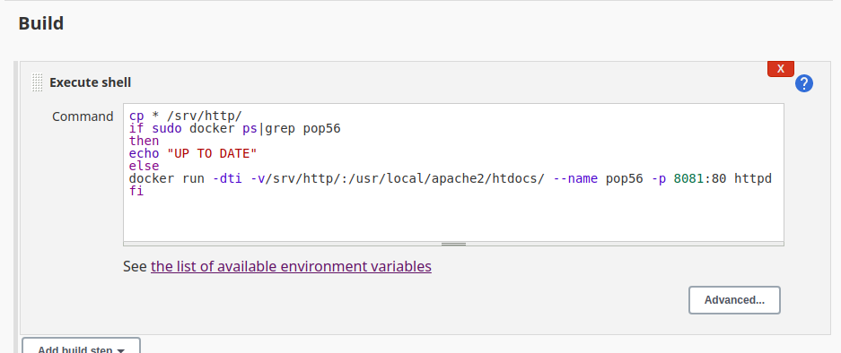
The add all files and commit the work and git pull also run form post-commit hook
Then project succesfully upload on github dev branch
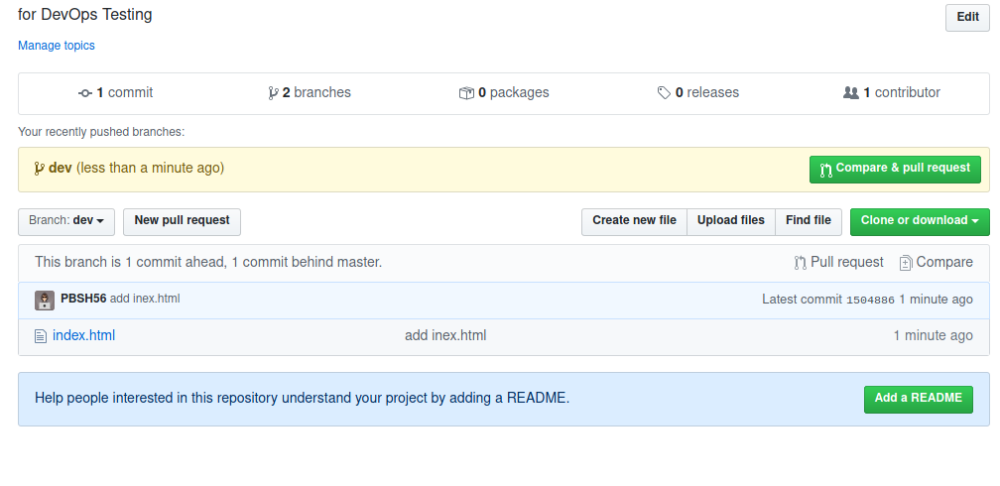
when project deploy on git the jenkins tiggers by Poll SCM and clone the repo /srv/http and also create and Docker container and copy repo in dev-docker-container
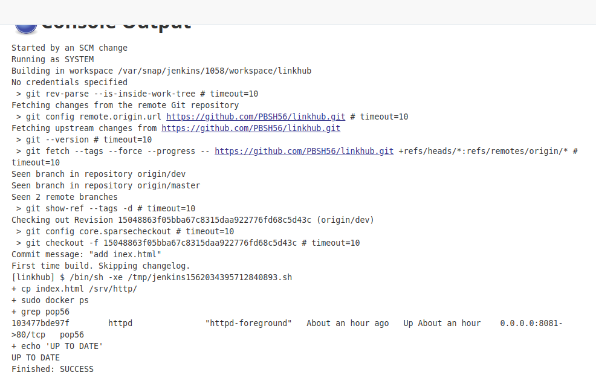
JOB 02 : If Developer push to master branch then Jenkins will fetch from master and deploy on master-docke environment.
Same process for the master branch
JOB 03 : Manually the QA team will check (test) for the website running in dev-docker environment. If it is running fine then Jenkins will merge the dev branch to master branch
check the both braches by QA and if changes found the merge the branch
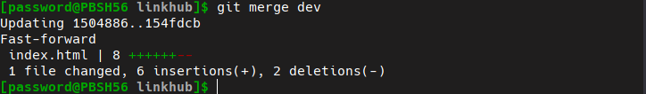
After deploy the master braches project on github by git push and also jenkins tigger and also copy repo in master-docker
Finally Project depoly on master-docker-environment
To clint side check the project goto address localhost:assignPort
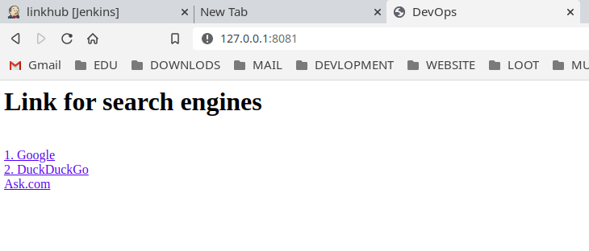